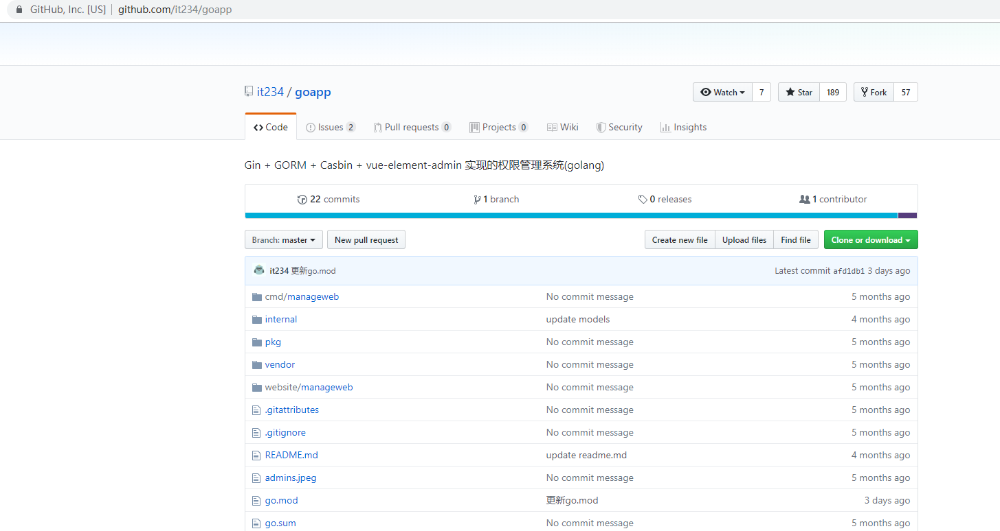
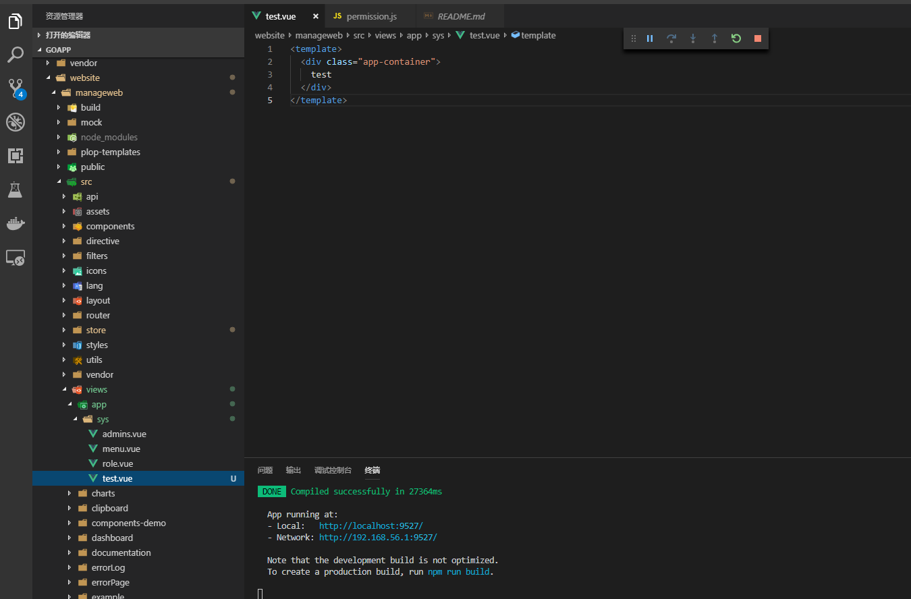
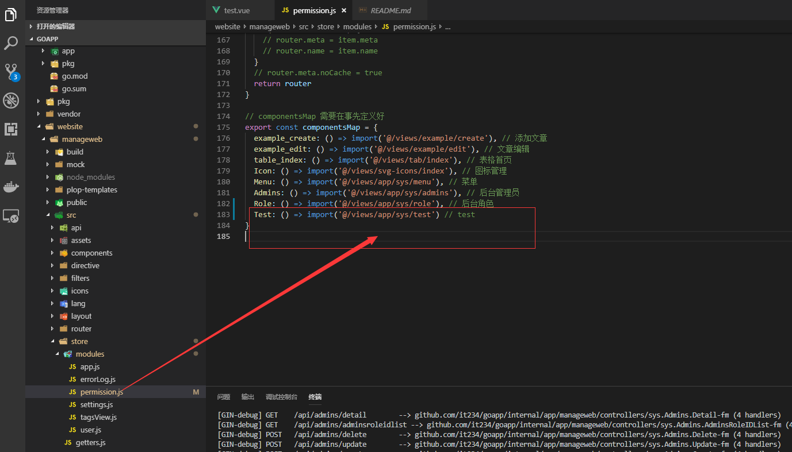
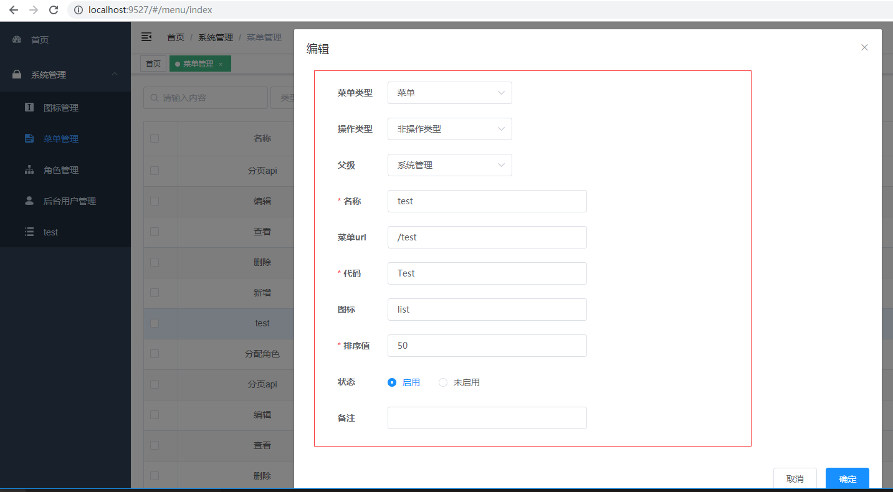
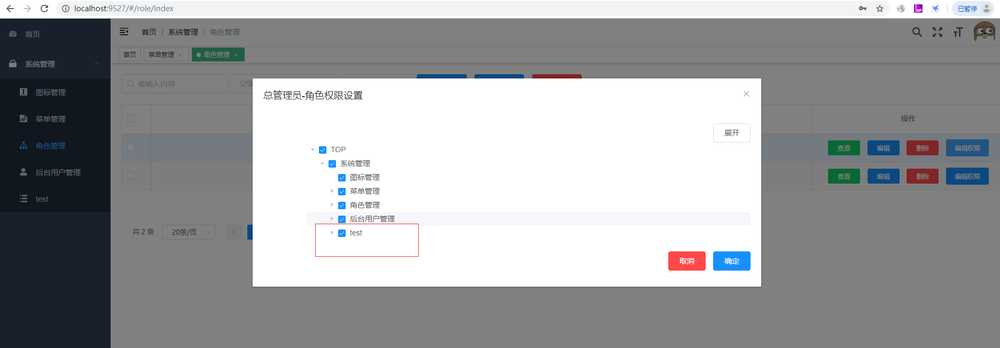
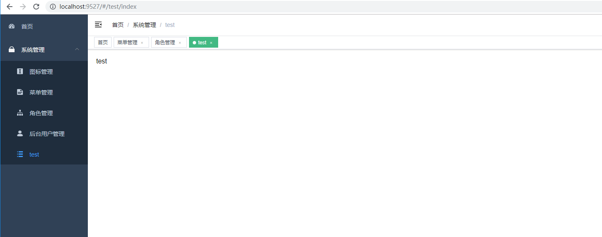

简析
基于 Gin + GORM + Casbin + vue-element-admin 实现的权限管理系统。
基于Casbin 实现RBAC权限管理。
前端实现： vue-element-admin。
开源地址见文末。
原由
前阵子把goapp开源后，不少朋友加我，一些朋友对vue还比较陌生，不知道如何添加自己的第一个后台管理功能，遇到比较多的问题是路由配置、菜单配置等，
本文主要说明如何添加一个功能项，希望对有需要的朋友带来一些帮助。开源几个月以来得到不少朋友的关注和支持，后期有时间打算另外写一个grpc微服务版的分支。

详情步骤
第一步：运行项目
cd cmd/manageweb，go run main.go
cd website/manageweb，npm install，npm run dev
第二步：在 goapp\website\manageweb\src\views\app\sys 目录下创建文件 test.vue

第三步：在 goapp\website\manageweb\src\store\modules\permission.js 文件中配置路由映射

第四步：在后台管理菜单管理功能中添加菜单，代码项要和第三步配置的'Test'一致

第五步：在角色管理功能项中配置新菜单权限

第六步：刷新页面即可看到新加的功能页

开源地址：https://github.com/it234/goapp